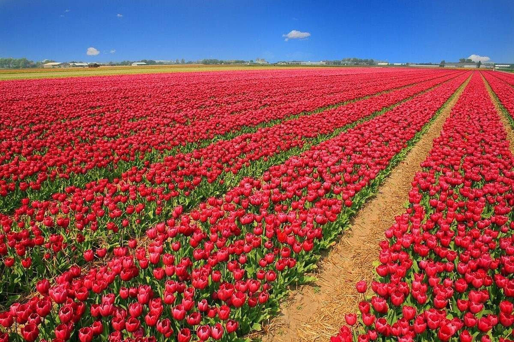
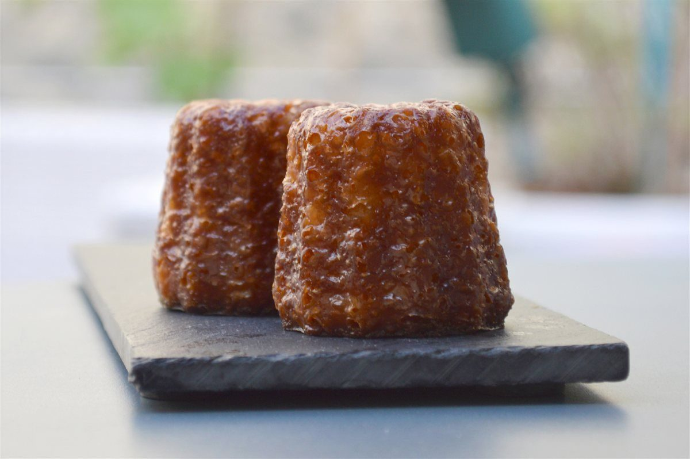
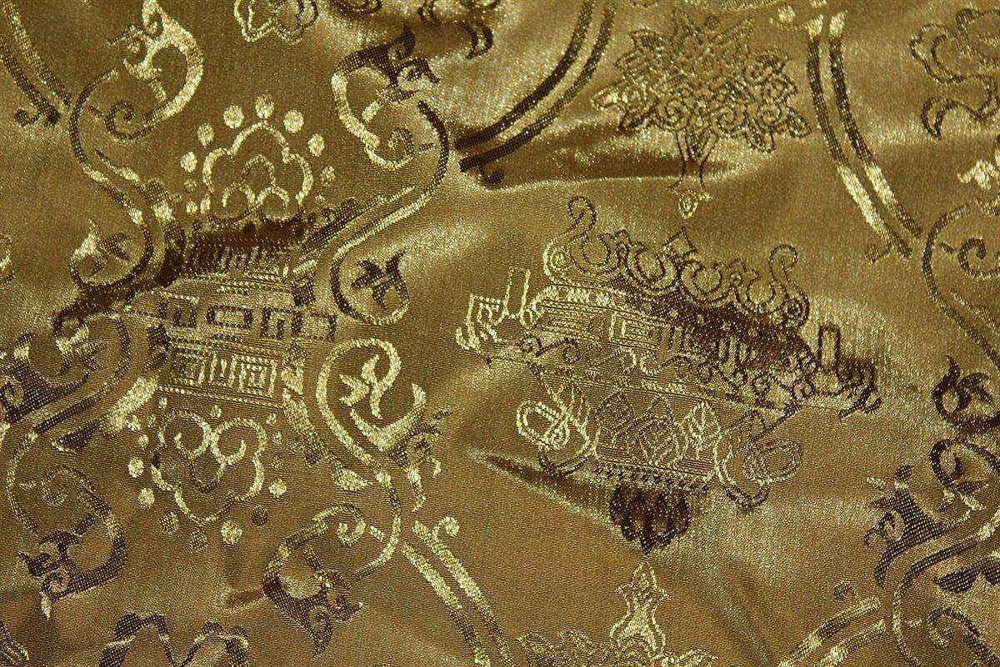
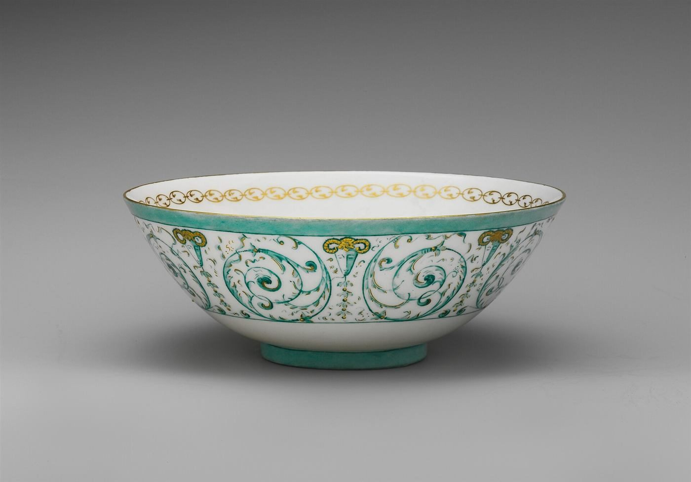
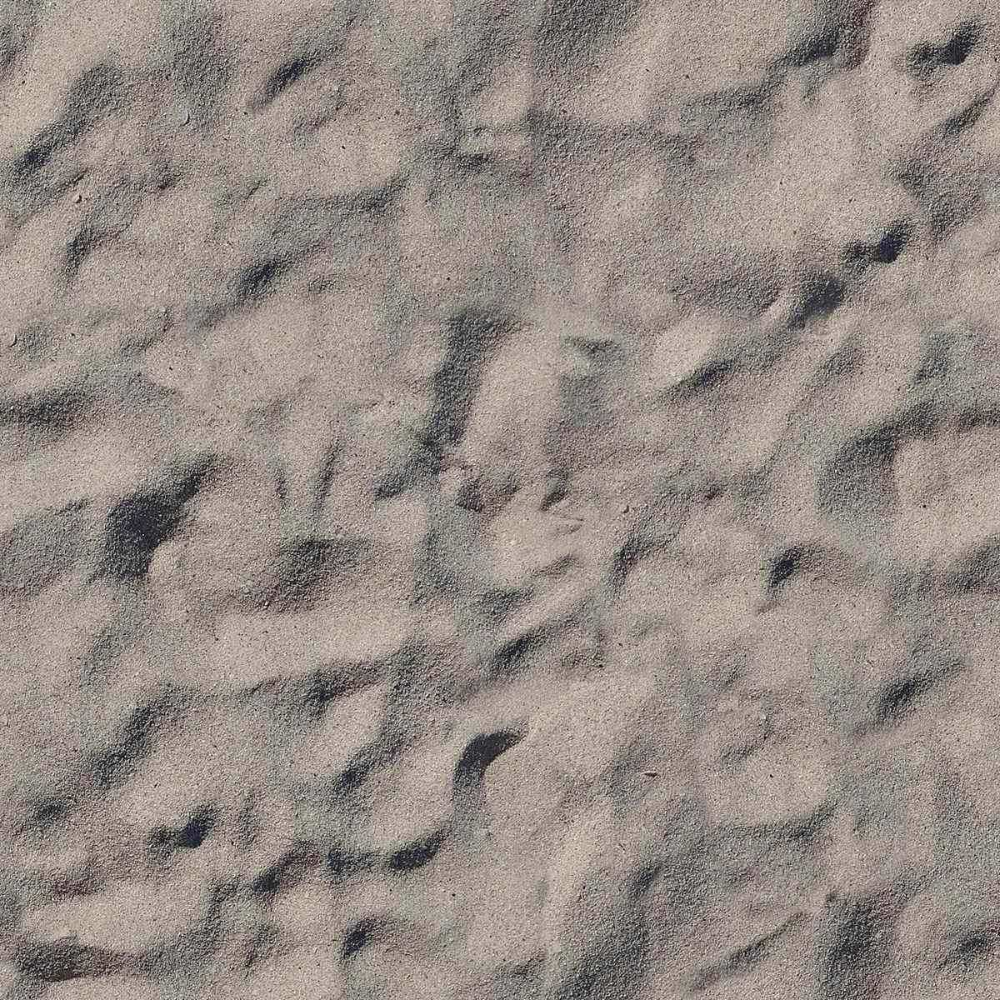
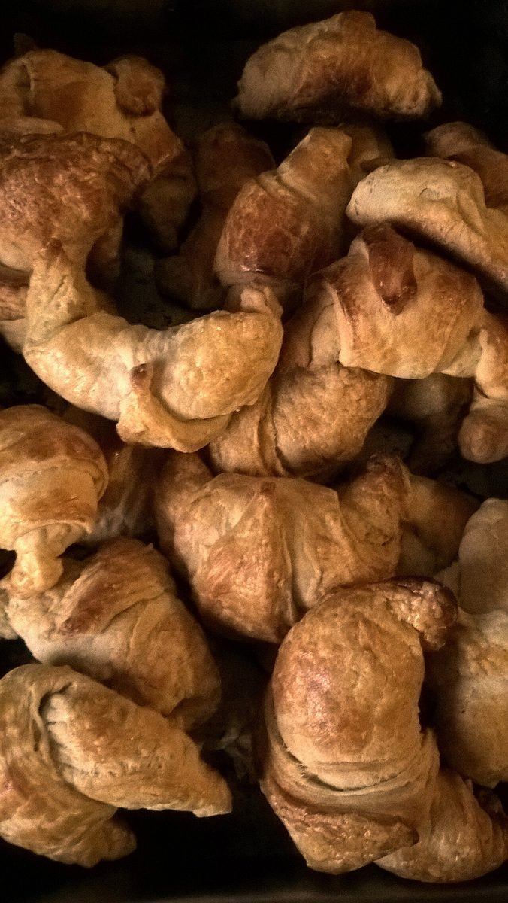
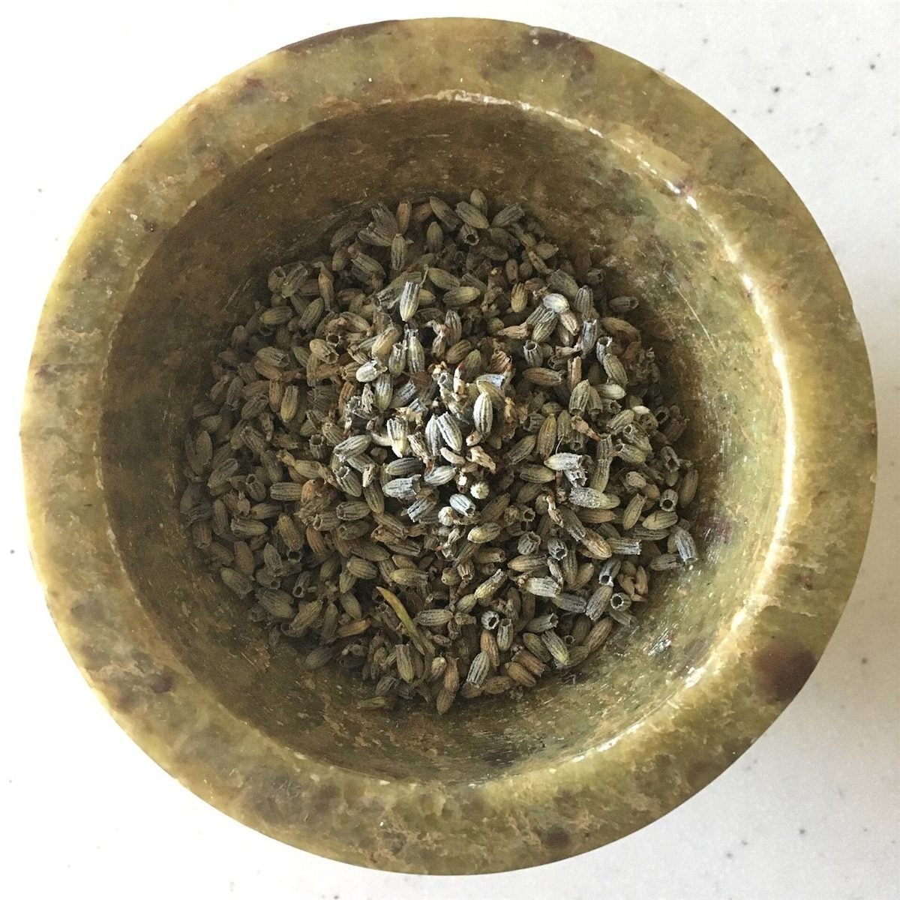

制作側の連想
蚊帳の部位を、配置図にしてみる
蚊帳(吊り下げ式のモスキートネット)の部位を図にしたもので、制作側の連想です。お店の理念・由来とは無関係で、実際の製品の仕様を示すものでもありません。 六つの部位に番号をふり、上の図と並べています。
凡例
六つの部位
- 1吊り手(吊り輪と吊り紐)天井の一点から四隅へ伸びる紐と、その先の輪。蚊帳全体をぶら下げる部分。
- 2天井布蚊帳の上面をふさぐ布。四隅で吊り紐とつながる。
- 3側面の網地四方を囲む、細かな格子状の布。空気は通し、小さな虫は通さない面。
- 4縁布(へり)網地の端をぐるりと縁取る、厚めの帯状の布。ほつれを防ぎ、吊り紐の力を受ける。
- 5出入り口(合わせ)正面で左右の布が重なる切れ目。重なりを手でめくって出入りする。
- 6裾(すそ)蚊帳の下端の帯。床に近い側で、全体の形を保つ。
写真(イメージ)
写真(イメージ)





写真はイメージです。お店のものではありません。
ご案内
お店のこと(確認できたものだけ)
| 所在地 | 〒327-0042 栃木県佐野市上羽田町７４０ |
|---|---|
| 電話 | 準備中 |
| 営業時間 | 準備中 |
| 定休日 | 準備中 |
| ご予約 | 準備中 |
| 駐車場 | 準備中 |
| SNS | Instagram @momonoki1225 |